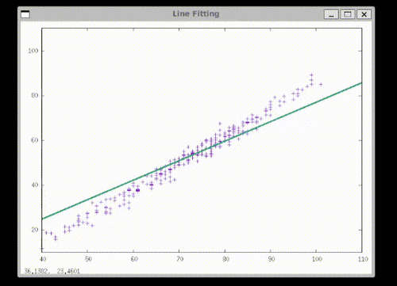
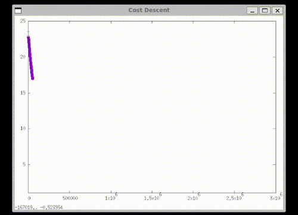
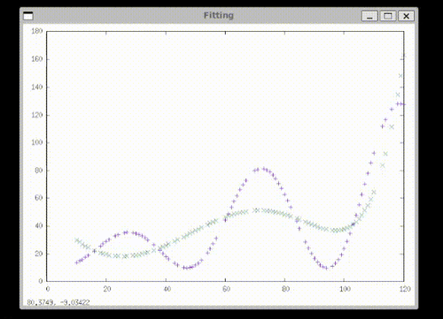

Introduction
DMLFW is a hands-on educational framework to learn core machine learning concepts in C, from scratch. It provides core data structures, gradient descent implementations, preprocessing utilities, and evaluation metrics with visual outputs.
GitHub repository: https://github.com/Mohammeddaniyal/machine-learning.git
Features
- Data Structures: Vectors, matrices, lists (double and string).
- Mathematical Utilities: Algebra, statistics, transformations.
- Algorithms: Batch, stochastic, and mini-batch gradient descent.
- Data Preprocessing: Encoding, normalization, scaling.
- Evaluation Metrics: R2 score, accuracy.
- Error Handling & Utilities: Centralized error reporting and file/string tools.
Quick Start
Minimal example demonstrating column vector usage:
#include <stdio.h>
#include <stdlib.h>
char err[512], dbg[512];
printf("Error creating column vector: %s\nDebug info: %s\n", err, dbg);
return EXIT_FAILURE;
}
printf("Mean of column vector: %lf\n", mean);
return EXIT_SUCCESS;
}
int main()
Main function to execute batch gradient descent linear regression example.
Definition batch_gd.c:316
Centralized error handling interface for the framework.
void dmlfw_get_error_string(char *error_string, uint32_t size)
Copies the last error message into the provided character buffer.
uint8_t dmlfw_error(void)
Checks if the last framework call resulted in an error.
void dmlfw_get_debug_string(char *debug_string, uint32_t size)
Copies detailed debug information about the last error into the provided character buffer.
Core vector types and utilities for double and string data.
void dmlfw_column_vec_double_destroy(dmlfw_column_vec_double *vector)
Destroys a column vector and frees its memory.
void dmlfw_column_vec_double_set(dmlfw_column_vec_double *vector, index_t index, double value)
Sets the value of an element in a column vector.
struct __dmlfw_column_vec_double dmlfw_column_vec_double
Opaque structure representing a column vector of doubles.
Definition dmlfw_vec_double.h:83
dmlfw_column_vec_double * dmlfw_column_vec_double_create_new(dimension_t rows)
Creates a new column vector of specified size.
double dmlfw_column_vec_double_get_mean(dmlfw_column_vec_double *vector)
Computes the mean of all elements in a column vector.
Visual Previews
See graphical output from core ML algorithms:

Batch Gradient Descent: Line fitting

Cost reduction during training

Polynomial curve fitting
Project Structure
- ml-framework/: Core framework code (data structures, ML algorithms).
- ml-examples/: Example programs demonstrating workflows.
- tools/: Command-line utilities for dataset preprocessing.
- docs/: Generated Doxygen documentation files.
Contact
Maintainer: Mohammed Daniyal
Email: moham.nosp@m.medd.nosp@m.aniya.nosp@m.l453.nosp@m.@gmai.nosp@m.l.co.nosp@m.m
LinkedIn: mohammeddaniyalali
Acknowledgments
Special thanks to mentor Prafull Kelkar Sir for invaluable guidance and support.